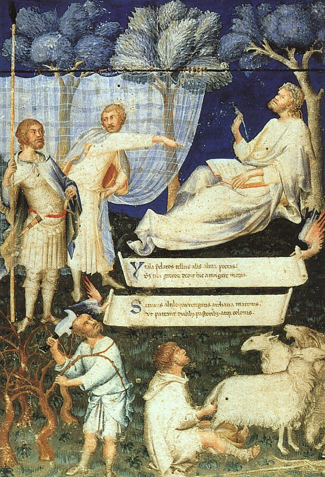
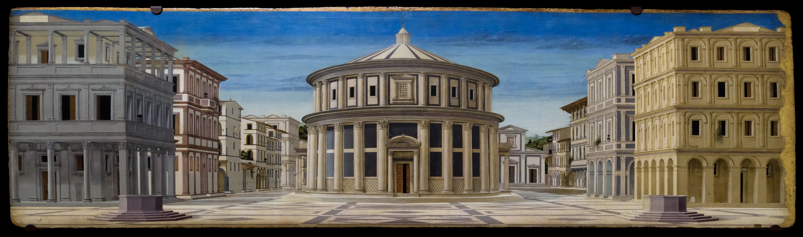
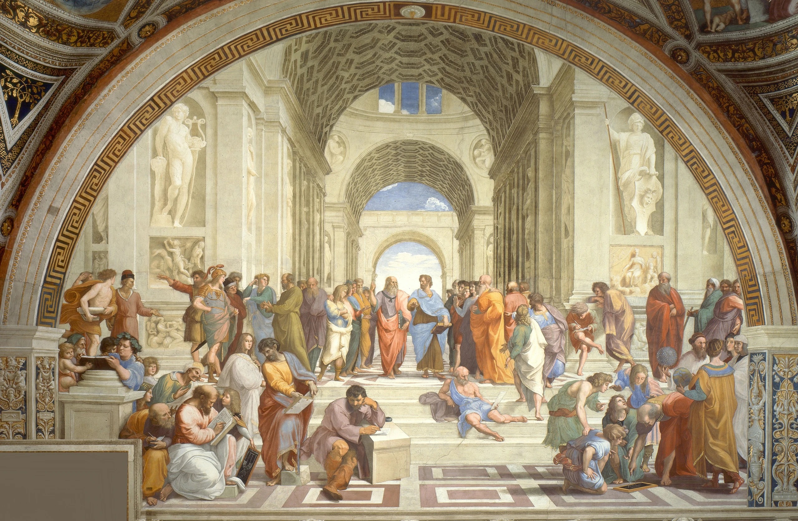
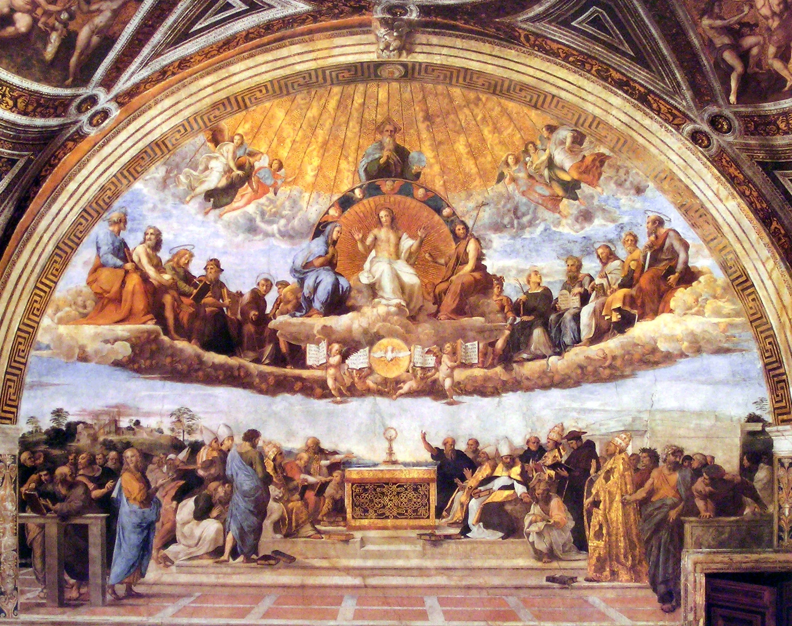

THE CLASSICAL INHERITANCE
The past
is never
finished.
How the Renaissance made
the ancient world new.

f. 1vSimone Martini · Petrarch’s Virgil
14th century · Biblioteca Ambrosiana
RECOVERY
A conversation
across centuries.
The ancient world survived on the page.
The humanists learned to hear it differently.
In 1345, Petrarch found a manuscript of Cicero’s letters in Verona. Reading an ancient writer as a living, complicated person helped turn classical learning into a conversation about how to live.
FOLLOW AN INHERITANCE
Latin authors → medieval copyists → humanist readers
Libraries, monasteries, and schools preserved Latin works long before Petrarch. Humanists sought manuscripts, compared readings, and cultivated eloquence.
PATRONAGE & PERSPECTIVE
An ancient ideal.
A modern ambition.
In Florence, classical learning acquired patrons, workshops, and public form. Wealth helped make an intellectual inheritance visible.

The Ideal City · unknown artist · late 15th century
Galleria Nazionale delle Marche, Urbino
The money behind the mind
The Medici supported artists, libraries, and scholars in Florence. Their patronage cultivated prestige and political influence as well as learning. Church institutions, civic bodies, courts, and other families also commissioned art.
Making space measurable
Brunelleschi studied Roman architecture and pioneered experiments in linear perspective. Alberti explained perspective and drew on Vitruvius. Classical proportion helped artists invent new spaces for Christian and civic life.
REINTERPRETATION
An old goddess.
A new meaning.
The pose remembers antiquity.
The painting belongs to the Renaissance.
Botticelli’s Venus adopts an ancient gesture of modesty. But her elongated form, flowing line, and poetic setting turn the classical body into something newly Florentine.
A painted Venus, c. 1485
Roman Aphroditec. 1485
Botticelli’s Venus
COEXISTENCE & TENSION
Athens, inside the Vatican.
Ancient philosophy found a place in a pope’s rooms.
Across the same room, Raphael painted Christian theology.


Plato points upward; Aristotle extends a hand toward the world. Raphael makes their different approaches visible. Select a detail to look closer.
RAPHAEL · THE SCHOOL OF ATHENS · VATICAN MUSEUMSReviving antiquity did not simply mean abandoning Christianity. Ancient learning could support Christian claims, complicate them, or be shown as a world Christianity had surpassed.
AFTERWORD
They recovered the past.
Then changed its future.
The Renaissance’s classical inheritance was an act of selection and transformation: texts became tools for education, forms became new spaces, and ancient ideas acquired new patrons and purposes.
When does recovering a culture
become inventing a new one?